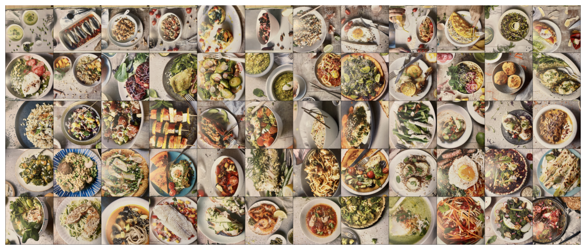
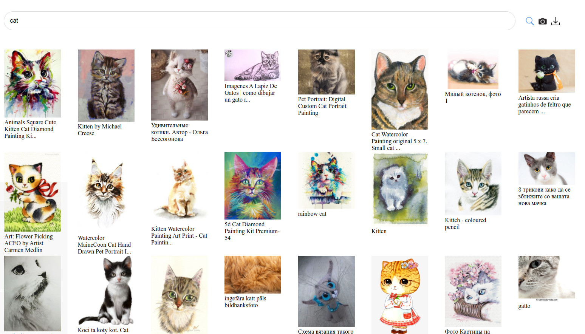
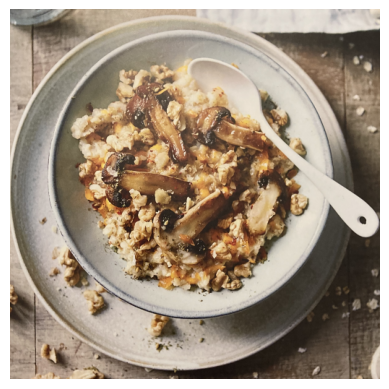
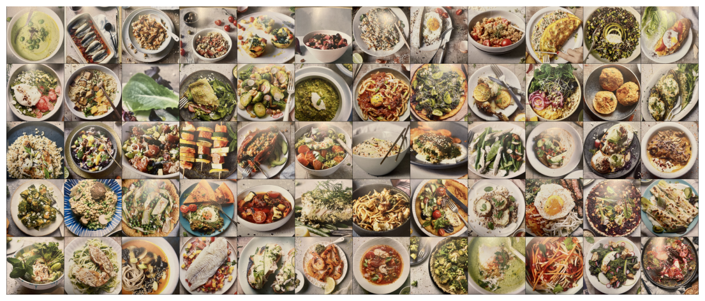
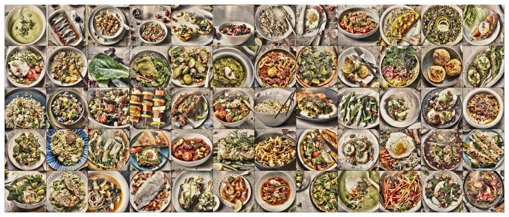
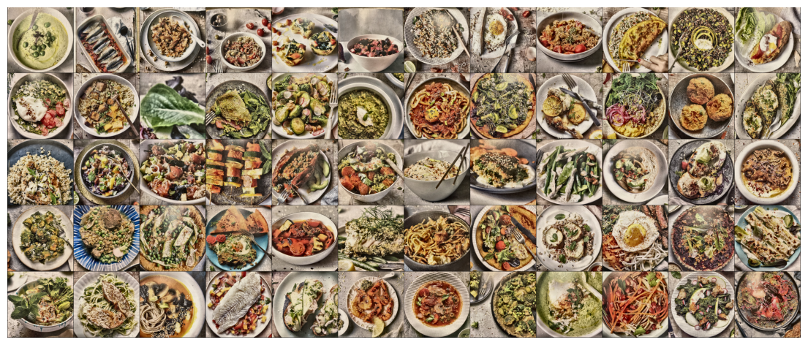
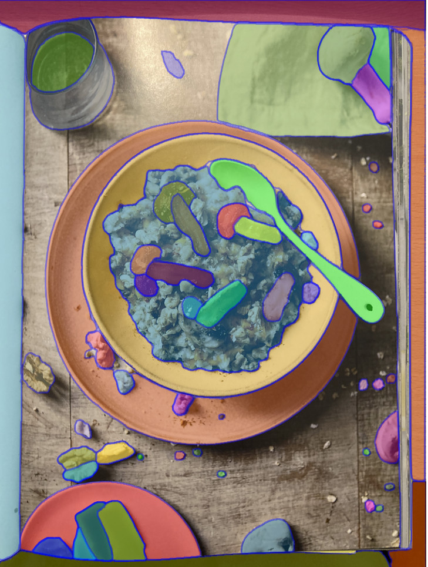
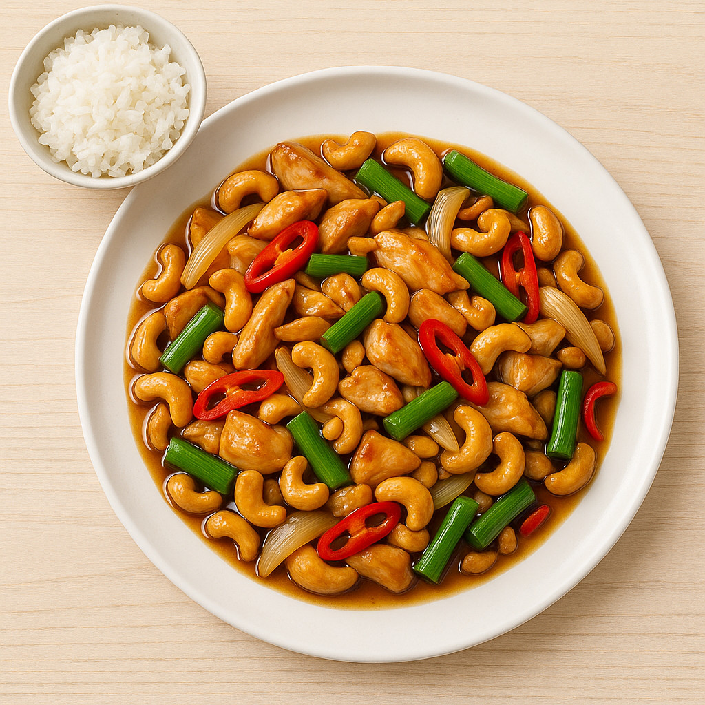
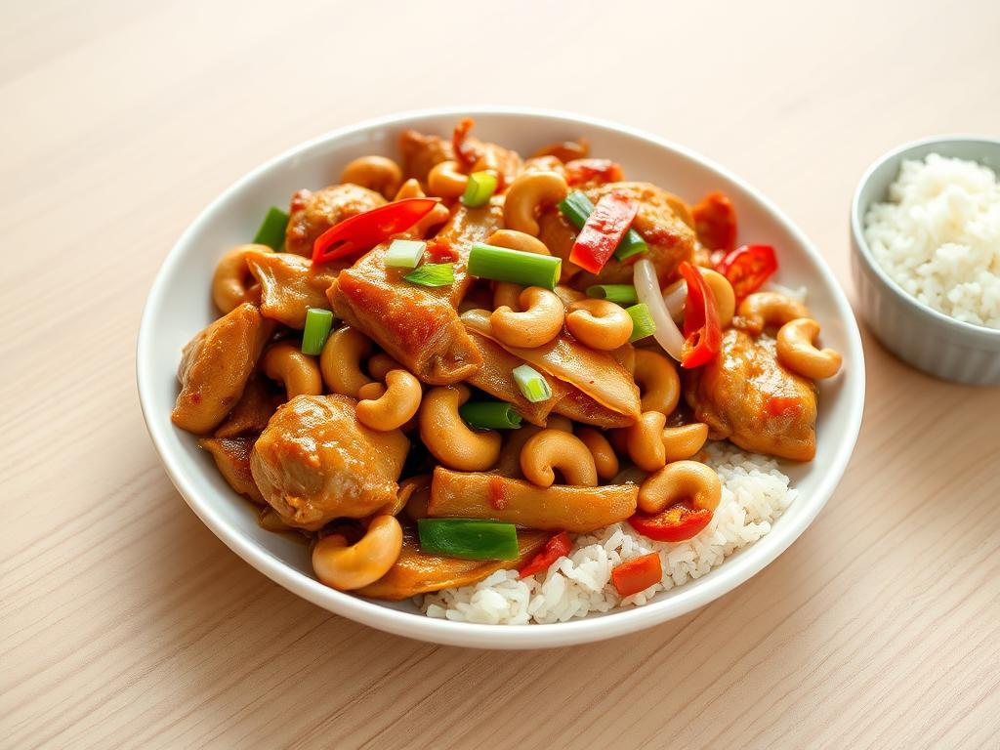

Automatically generating thumbnails from pictures, can lead to bad crops or small details. Saliency Maps allow us to focus on the dominant object in a picture. I use multimodal aesthetic scoring models to evaluate the crops.
Author
Dominik Lindner
Published
September 5, 2025
1 Why we need thumbnails
The recipescanner allows scanning books and creating recipes with thumbnails. These Thumbnails should look nice and provide a good first impression of the meal.
There are three categories of recipes:
The picture that belongs to the recipe is identified.
The recipe does not have a picture.
We have a picture and several recipes, but we don’t know which recipe the picture belongs to.
In this notebook we will examine case 1 and case 2. Case 3 is part of the page segmentation task, which I’ll cover in another notebook.
2 What makes a good thumbnail
We have a picture of a recipe and want to create a good thumbnail from it. Simply resizing the image often produces thumbnails that lack detail.
A better, straightforward solution is to center-crop the picture to the size of the thumbnail.
The rationale: plates are usually centered in recipe photos.
But what if that’s not the case?
Does this method produce aesthetically pleasing thumbnails, and is there a way to improve in case of non-centered subjects?
The short answer: yes.
See the following picture
Improvements in Thumbnail generation
Read on to discover how we do this.
3 Straightforward solution: center crop of pictures
Code
# Standard libraryimport osimport tempfilefrom glob import globfrom pathlib import Pathfrom os.path import expanduserfrom urllib.request import urlretrieveimport warnings# Third-partyimport cv2 as cvimport matplotlib.pyplot as pltimport numpy as npimport open_clipimport pandas as pdimport seaborn as snsimport torchimport torch.nn as nnimport torch.nn.functional as Fimport torchvisionfrom PIL import Image, ImageOpsfrom gradio_client import Client, file, handle_filefrom torchvision import transformsfrom torchvision.transforms import InterpolationModeimport tqdm# Local modulesfrom aesthetic_predictor_v2_5 import convert_v2_5_from_siglip# Jupyter magic%matplotlib inline# Suppress all warnings (optional)warnings.filterwarnings("ignore")DATA_DIR = Path("data/covers")THUMB_SIZE =512NROW =12thumb_transform = transforms.Compose([ transforms.Resize(THUMB_SIZE, interpolation=InterpolationMode.LANCZOS), transforms.CenterCrop(THUMB_SIZE), transforms.ToTensor()])to_pil = transforms.ToPILImage()to_tensor = transforms.ToTensor()def show_image_grid(images, nrow=NROW, figsize=(14, 12)): grid = torchvision.utils.make_grid(images, nrow=nrow) plt.figure(figsize=figsize) plt.imshow(grid.permute(1, 2, 0)) plt.axis("off") plt.show()
Let’s first load our sample data and apply center-cropping.
files =sorted(glob(str(DATA_DIR /"*.JPG")))images = [thumb_transform(Image.open(f).convert("RGB")) for f in files]show_image_grid(images)

As we can see, many picture look quite good. However, in some images the dish gets cut off. We could certainly do better.
For a human it’s obvious that we should center the plate in the thumbnail. For a computer that is challenging as plates are coming in different shapes, and sometimes there are no plates at all. In our specific case, the images are also upside down.
We’ll see later that this is still solvable. Before we get there, though, let’s first define what makes a picture look good.
For that, we need a metric.
4 How to measure beauty
Wouldn’t it be great if we could define a metric that tells us how good a picture is? How beautiful it looks?
In fact, there is a way to do this. We can use Aesthetic Predictor models. Let’s look at two such Models LAION and Aesthetic Predictor V2.5.
4.1 LAION
LAION is the older of the two models.
It is “a linear estimator on top of CLIP to predict the aesthetic quality of pictures.”

But how does it work?
Contrastive Language-Image Pretraining (CLIP) is a multimodal model introduced in 2021. It’s based on
A text encoder, usually GPT like
A vision encoder, a vision transformer
Both encoders produce embeddings, and the model produces combined embeddings with a dimensionality of 768. CLIP was trained on image-caption pairs and used cosine similarity to align text and image embeddings as close as possible.
This allowed the model to identify the best caption for a given image, or vice-versa.
LAION builds on top of CLIP, but scales it up to billions of images compared to clips 400 million.
On top of this embedding model, a linear regression model is trained using a much smaller dataset. The model is define by,
\[score= W * \vec{emb} + b\]
Where W and b are the weights and bias of the linear regression model.
4.2 Aesthetic Predictor V2.5
In AI, four years is a long time.
In 2023 Google introduced SigLIP, Sigmoid Loss for Language–Image Pretraining.
The original CLIP model from OpenAI uses a contrastive loss function. Core to this function is a softmax over all image pairs. Even though all images can not be included at once, this is approximated using a very large batch size. This large batch size requires expensive compute hardware.
Another limitation of LAION was its the underperformance across diverse domains.
SigLIP addresses both problems:
First it uses a sigmoid loss function. Smaller batch sizes can be used.
Second it uses more data, being more robust to diverse domains.
So let’s check the aesthetic scores for our images.
4.3 Calculating scores with Aesthetic Predictor 2.5
We will start with the newer model. Unfortunately, my GPU is too old and is no longer supported by PyTorch version required for this model.
We can use the Hugginface Api or CPU, though.
4.3.1 Using the Hugging Face API for Aesthetic Predictor 2.5
%%timeclient = Client("discus0434/aesthetic-predictor-v2-5")def predict_with_ae25api(img_tensor, client): img = to_pil(img_tensor.cpu())with tempfile.NamedTemporaryFile(suffix=".png", delete=False) as t: img.save(t.name, format="PNG")return client.predict(image=file(t.name), api_name="/inference")scores_api = [predict_with_ae25api(img, client) for img in images]print(scores_api)
CPU times: user 7min 47s, sys: 47.3 s, total: 8min 34s
Wall time: 1min 27s
np.array(scores_ap25).mean()
np.float32(5.3517203)
With 1.5 minutes, this approach is faster than calling the api.
One possible use case is iterative improvement of the score through an algorithmic approach. In such a scenario, we should aim to process all 60 images within just a few seconds.
LAION has lower requirements on the hardware, we’ll try it next.
print(f"Pearson correlation is {pearson_corr}, Spearman correlation is {spearman_corr}")
Pearson correlation is 0.268462598323822, Spearman correlation is 0.22606279522089476
Values close to 0.2 indicate that there is little correlation between the CLIP-based and the SIGLIP-based evaluations. The picture confirms the numerical values, too.
At first, this might seem surprising. Should a good image not always look good?
Not necessarily. Beauty lies in the eye of the beholder. And in fact, those two models are different. The difference in the loss functions is not the only factor that changed.
The two models were trained on very different datasets.
LAION is primarily focused on Photography
SIGLIP focuses on much broader range of web images.
As a result, images with bright, unrealistic colours may score higher using SIGLIP than with LAION.
5 Optimizing thumbnails with global methods
Due to the significant speed advantage on my machine, I will focus on LAION. Let’s create a baseline.
Non-crop improvements, modifying the entire image - Correct orientation - Color correction - Glare and noise reduction
Crop-based improvements try to locate a plate in the image and crop. - Use saliency maps to highlight the most important object in the image - Use segmentation models to find all contours - Use bounding box object detection models like YOLO to detect the dish - Perform optimizations on (x, y, zoom) by scoring multiple crops and treating the search for the perfect crop as an optimization problem
5.1 Correct orientation
This is the most obvious one.
images_correct_orientation = [thumb_transform(ImageOps.exif_transpose(Image.open(f)).convert("RGB")) for f in files]
As we can see correct orientation leads to a better score.
5.2 Color correction and denoising
I experiment with applying color correction and denoising on some samples. However, in most cases this actually lowers the score.
One possible explanation is that the model was trained on untreated sRGB pictures. By altering the images too much, we risk creating an out-of-domain.
Nevertheless, we will still apply a mild correction to to reduce glare, but only after cropping.
6 Optimizing Thumbnails with cropping using saliency maps
Saliency detection attempts to identify which parts of an image are the most visually important.
We have two lightweight options for generating saliency maps:
Opencv-based fine-grained saliency map
U²-Net
We will not use the Opencv Method.
Opencv algorithm compares pixel color variations with their neighbours. However, the approach is outdated and quite slow, making it not suitable for our purpose.
6.1 U²-Net saliency map
U²-Net is a deep learning model for salient object detection that uses a nested U-shaped architecture with Residual U-blocks (RSUs) for efficient multi-scale feature extraction. It delivers high-accuracy segmentation and is widely used for background removal.
We aim to identify the main dish as the foreground. Instead of removing the background, we’ll simply use the saliency map to crop the dish region.
Next, let’s load the model, and examine if it correctly loaded. If so We should see definitions of RSUs. I copied definition and weights from https://github.com/xuebinqin/U-2-Net/.
img_area = H * Wbest_i, best_area =None, 0for i inrange(1, num): x, y, w, h, area = stats[i]if area > best_area and area >=0.01* img_area: best_i, best_area = i, area
x, y, w, h, _ = stats[best_i]cx, cy = x + w /2.0, y + h /2.0
out = transposed_image_np.copy()cv.rectangle(out, (x, y), (x+w,y+h), (0, 255, 0), 10)plt.axis("off")plt.imshow(out)
The green bounding box shows very nicely how we detected the plate. Let’s turn this into a function, which produces a resized square crop while respecting image boundaries.
def crop_on_saliency_map(saliency_map, image): S8 = np.clip(saliency_map * (255if saliency_map.max() <=1.0else1.0), 0, 255).astype(np.uint8) _, mask = cv.threshold(S8, 0, 255, cv.THRESH_BINARY + cv.THRESH_OTSU) mask = cv.morphologyEx(mask, cv.MORPH_CLOSE, np.ones((7, 7), np.uint8)) mask = cv.morphologyEx(mask, cv.MORPH_OPEN, np.ones((5, 5), np.uint8)) num, labels, stats, _ = cv.connectedComponentsWithStats(mask, 8) img_area = H * W best_i, best_area =None, 0for i inrange(1, num): x, y, w, h, area = stats[i]if area > best_area and area >=0.01* img_area: best_i, best_area = i, area x, y, w, h, _ = stats[best_i] cx, cy = x + w /2.0, y + h /2.0# make image square and shift if we are too close to the border pad =0.0 w2, h2 = w * (1+2* pad), h * (1+2* pad) side =max(w2, h2) side_px =min(int(round(side)), W, H) half = side_px /2.0 cx =float(np.clip(cx, half, W - half)) cy =float(np.clip(cy, half, H - half)) x0 =int(round(cx - half)) y0 =int(round(cy - half))# guard against rounding pushing us out of bounds x0 =max(0, min(x0, W - side_px)) y0 =max(0, min(y0, H - side_px)) x1 = x0 + side_px y1 = y0 + side_px# crop and resize crop = image[y0:y1, x0:x1] interp = cv.INTER_AREA if512<max(crop.shape[:2]) else cv.INTER_LINEAR crop = cv.resize(crop, (512, 512), interpolation=interp)return crop
result = crop_on_saliency_map(S_fused, transposed_image_np)plt.axis("off")plt.imshow(result)

This is the correct crop of the plate in the picture. Next, we score the cropped image.
This score is higher than our baseline score. That means correct cropping has a effect.
6.3 Improving even more
On some images, there are too many fine details. The network will detect the whole page as salient object. We need to run the network with another input resolution. We can run several resolutions and decide which is best after scoring. A quicker approach is to examine the size of the main component in the picture, if it is too large we need to increase the resolution.
Therefore, we define a function, which checks if we cover too much of the page with one component, where “too much” means 80%.
def _looks_like_full_page(sal, area_frac_thresh=0.80,require_border_touch=True):"""Heuristic: is the biggest component huge and touching the image border?""" S8 = (np.clip(sal *255, 0, 255)).astype(np.uint8) _, mask = cv.threshold(S8, 0, 255, cv.THRESH_BINARY + cv.THRESH_OTSU) num, labels, stats, _ = cv.connectedComponentsWithStats(mask, 8)if num <=1:returnFalse# largest component (skip background 0) idx =1+ np.argmax(stats[1:, cv.CC_STAT_AREA]) x, y, w, h, area = stats[idx] H, W = sal.shape[:2] area_frac = area /float(H * W) touches = (x ==0) or (y ==0) or (x + w == W) or (y + h == H)return (area_frac >= area_frac_thresh) and (touches if require_border_touch elseTrue)
With this function in place we can run a small optimization function. It will run over predefined scales and check if the result does not look like the full page. We start with smaller resolutions as these tend to produce the full page saliency map.
def run_u2_autoscale(model, image_np, sizes=(320, 480, 640, 896), device="cuda"): last_sal =Nonefor i, s inenumerate(sizes): sal = run_u2_on_pil(model, image_np, s) last_sal = salifnot _looks_like_full_page(sal):return sal# If even the largest still looks like a page, fall back to a small multi-scale fuse (max) sal_big = last_sal sal_small = run_u2_on_pil(model, image_np, sizes[0])return np.maximum(sal_big, sal_small)
6.4 The full pipeline
Now with everything in place we can define a function that creates the fused saliency map, the bounding box, and finally crops.
The image is a perfect crop. It is not obvious why the score decreased. In terms of results it is exactly what we want. The same is true for almost all other images, as we can see below.
show_image_grid([to_tensor(img) for img in cropped_images])

6.5 Postprocessing
The pictures were done with a mobile phone camera. This is the quickest way to digitize a book without expensive equipment. There is some glare from glossy paper and non-perfect light condition. Let’s try to improve.
def reduce_glare(img):# Ensure BGR → LAB (good for luminance adjustments) lab = cv.cvtColor(img, cv.COLOR_RGB2LAB) l, a, b = cv.split(lab)# Apply CLAHE on L-channel, 2.0 and 8.8 produce moderately aggressive results clahe = cv.createCLAHE(clipLimit=2.0, tileGridSize=(8,8)) cl = clahe.apply(l)# Merge and convert back limg = cv.merge((cl, a, b)) final = cv.cvtColor(limg, cv.COLOR_LAB2RGB)return finaldef detect_glare_mask(img, thresh=230): hsv = cv.cvtColor(img, cv.COLOR_RGB2HSV) h, s, v = cv.split(hsv) mask = (v >= thresh).astype(np.uint8) *255# Optional: clean up mask kernel = np.ones((5,5), np.uint8) mask = cv.morphologyEx(mask, cv.MORPH_CLOSE, kernel) # fill small holes mask = cv.morphologyEx(mask, cv.MORPH_OPEN, kernel) # remove tiny specksreturn maskdef inpaint_glare(img, thresh): mask = detect_glare_mask(img, thresh=thresh) gray = cv.cvtColor(img, cv.COLOR_RGB2GRAY)# Detect glare: very bright areas img_bgr = cv.cvtColor(img, cv.COLOR_RGB2BGR) inpainted_bgr = cv.inpaint(img_bgr, mask, inpaintRadius=5, flags=cv.INPAINT_TELEA) inpainted_rgb = cv.cvtColor(inpainted_bgr, cv.COLOR_BGR2RGB)return inpainted_rgb
crop_glare_reduced = [reduce_glare(img) for img in cropped_images]crop_glare_reduced_and_inpainted = [inpaint_glare(img,240) for img in crop_glare_reduced]
show_image_grid([to_tensor(img) for img in crop_glare_reduced])

show_image_grid([to_tensor(img) for img in crop_glare_reduced_and_inpainted])

scores_laion_cropped_fixed_glare = score_with_laion([to_tensor(img) for img in crop_glare_reduced])scores_laion_cropped_fixed_glare.mean()
np.float32(5.9497223)
scores_laion_cropped_fixed_glare_inpaint = score_with_laion([to_tensor(img) for img in crop_glare_reduced_and_inpainted])scores_laion_cropped_fixed_glare_inpaint.mean()
np.float32(5.816769)
Subjectively the pictures look better. The average score is a little lower for histogram equalization and gets bad for mask-based glare inpainting. Let’s check a single image.
The strong glare is succesfully removed, without introducing artifacts or too high contrast.As we can see glare reduction can deliver improvements. Let’s combine the best of all.
The best picture is the one without post-processing. Personally I like the histogram equalization most. The inpainting has to strong artifacts in the non glare parts. There is too much contrast on the parts of the image which were not affected by the glare. With more work this could certainly be improved.
Finally, my impression is that the LAION score is not good for our use case of food photography. The scores are too close together.
7 Other methods
7.1 Segmentation
When I brainstormed ideas, I considered using segmentation models. On of the most advanced segmentation models is (Segment Anything)[https://segment-anything.com/demo].
For a problematic image, the segmentation model gives the following result: 
However, identifying the best crop would require significant post- processing. Assuming we always look for dishes, which is not necessarily the case, we could look for smooth large shapes.
7.2 Object detection
Bounding box object detection algorithms can, in theory, locate the plates quite well. The main drawback is that I would need to train such a detector myself, which requires a lot of labeled data.
While there are backbones such as YOLO, we would still require several hundreds of labeled images.
This could be a viable refinement once a significant number of images has been processed.
7.3 Direct optimization
Another possible approach is a brute-force optimization method. We would run an optimization algorithm that uses LAION to score the images. Based on the gradients we would vary the crop zone.
However, from my experiments with saliency-based images, the aesthetic score is somewhat subjective and not always intuitive. To make this approach effective, the scoring function would likely need to be reworked. While there is certainly room for experimentation here, this method would require more research and fine-tuning.
8 Summary
What did we learn?
We found that it is possible to generate better thumbnails using slightly more intelligent techniques. I used a multi-scale saliency algorithm to identify the dominant object in each image. This lead to a average score increase of 1.3%.
Additionally, glare reduction makes the pictures subjectively nicer, but it actually leads to a lower mean score.
This raises an interesting question: how should we score good-looking thumbnails? The LAION classifier can help slightly improve images, but in some cases, it actually prefers images with more glare.
What if we have no images at all. Then the only option is image generation.
However, this is computationally far more costly as the previous processing. And it does not seem to work that well.
Real photo
With this prompt : A bright, photorealistic cookbook-style photo of a freshly cooked Thai-style chicken stir-fry with cashews, beautifully plated on a white ceramic dish. The dish features tender, thinly sliced chicken thighs coated in a glossy, rich sauce made from oyster sauce, soy sauce, and fish sauce. Golden-brown roasted cashews scattered evenly, thin wedges of onion, vibrant green onion pieces, and delicate slices of red cayenne pepper for a pop of color. Served alongside a small bowl of perfectly steamed jasmine rice. The composition is clean and minimal, shot on a light wooden kitchen table with natural daylight. Soft, even lighting with gentle shadows, crisp textures, and realistic color tones. High-end food photography, cookbook aesthetic, ultra-HD.
Leads to this quite unrealistic picture from Chatgpt and FluxSchnell

ChatGPT

Fluxschnell
Personally i find those less appealing than real photos, even though Flux Schnell comes at a much lower price tag.
Slighly better is Stable diffusion
Stable Diffusion
Until one has cooked the recipe this is the only option to have a picture.
It would be interesting to see how the saliency map methods works on real pictures of the cooked food.
Like this post? Get espresso-shot tips and slow-pour insights straight to your inbox.